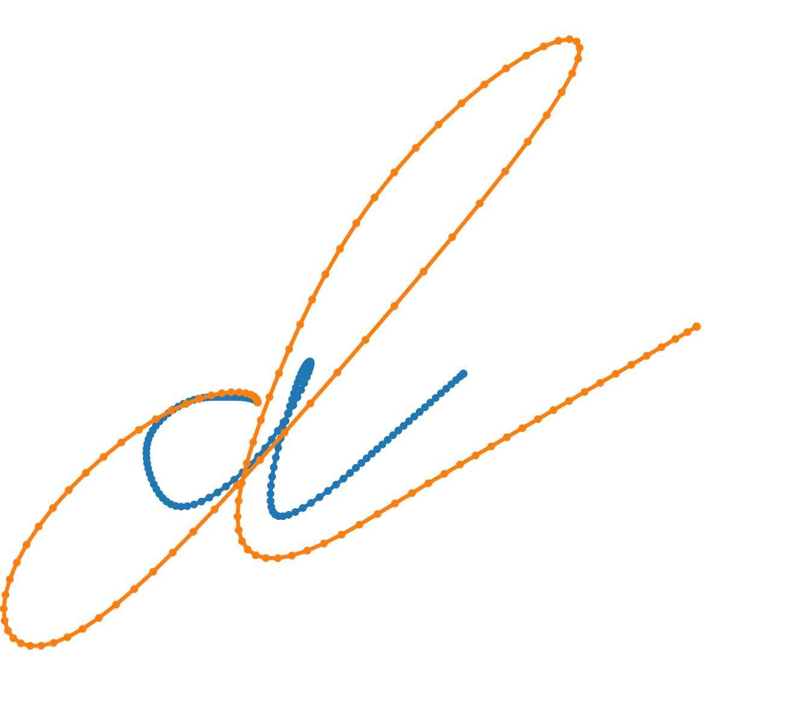

|
CGAL 6.0 - dD Polyline Distance
|
Loading...
Searching...
No Matches
|
CGAL 6.0 - dD Polyline Distance
|

This package provides functions for computing the Fréchet distance of polylines in any dimension under the Euclidean metric.
The Fréchet distance is a classical dissimilarity measure between polylines. Its advantages over other measures is that it both considers the polylines as continuous objects and takes into account the ordering of the points. Intuitively, the Fréchet distance is commonly explained as follows: Imagine a human walking on one polyline while a dog walks on the other polyline, they are connected by a leash, and they are only allowed to walk forward. The Fréchet distance is the shortest leash length that allows the human and the dog to jointly walk from start to end on their respective trajectories.
The Fréchet distance is a metric. This implies that two polylines have distance zero if and only if they are equal (after removing redundant vertices).
The package provides one function to approximate the Fréchet distance and one function to decide whether the Fréchet distance is at most a given value.
The function approximate_Frechet_distance() computes an approximation of the Fréchet distance between two polylines, up to a given approximation error. It returns an interval that contains the true distance. The function is_Frechet_distance_larger() decides if the Fréchet distance between two polylines is larger than a given bound.
Both functions have as template parameter a traits class defining the dimension and the point type. The traits classes have as template parameter a kernel. This may be a kernel such as Simple_cartesian with a floating point number type, or a filtered kernel such as Exact_predicates_inexact_constructions_kernel. In both cases the result is guaranteed to be correct.
Internally all computations are done using interval arithmetic. In case of filter failures the algorithm switches to the usage of square root extensions.
The algorithms in this package are an adaption of the implementation of a SoCG/JoCG paper. In particular, the implementation can decide non-difficult cases very fast while for difficult cases it still has the quadratic running time guarantee of the classical Fréchet distance algorithm by Alt and Godau. This is achieved by using fast filtering methods and a divide and conquer algorithm with pruning rules on the free-space diagram.
In the examples we use different kernels to illustrate that the functions work as well for inexact or exact kernels.
The following example shows how we can use is_Frechet_distance_larger() to decide whether the Fréchet distance between two polylines in the Euclidean plane is at most a given value.
File Frechet_distance/Frechet_distance_2.cpp
The following example shows how we can compute the Fréchet distance up to a given precision on two polylines in 3-dimensional Euclidean space using approximate_Frechet_distance().
File Frechet_distance/Frechet_distance_3.cpp
The teaser image is a visualization of two data points from the Character Trajectories data set.
An initial version using floating point arithmetic was developed by the authors while working at the Max Planck Institute for Informatics in Saarbrücken, Germany. André Nusser, together with Sebastien Loriot and Andreas Fabri, introduced the usage of interval arithmetic and square root extensions to alleviate issues stemming from rounding errors and hence ensuring correctness of the computation.